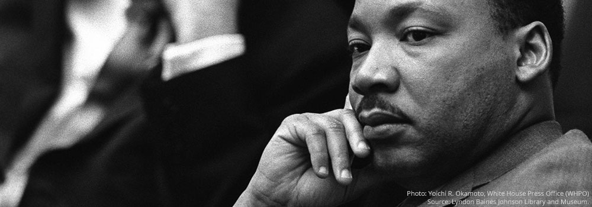

|

|
- Career: Civil Rights Leader
- Born: January 15, 1929 in Atlanta, GA
- Died: April 4, 1968 in Memphis, TN
- Best known for: Advancing the Civil Rights Movement and his "I Have a Dream" speech
|
|
Who is Marin Luther King, Jr?
Martin Luther King, Jr. was a civil rights activist in the 1950s and 1960s. He led non-violent protests to fight for the rights of all people of color including African Americans. He hoped that America and the world could become a colorful society where race would not affect a person's civil rights. |
|
How did Martin Luther King, Jr grew up?
Martin Luther King, Jr. was born in Atlanta, GA on January 15, 1929. He went to Booker T. Washington High School. He was so smart that he skipped 9th and 12th grade in high school. He graduated at the age of 15 and went to Morehouse College, then to Boston University. |
|
How did Martin Luther King, Jr die?
Martin Luther King, Jr. was assassinated on April 4. 1968 in Memphis, TN. While standing on the balcony of his hotel, he was shot by James Earl Ray. |
|